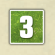
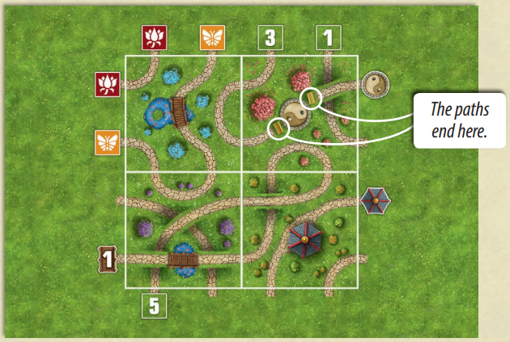

¿Como funciona?
Juega 1 a 1 los 50 puzles. Elige una de las 7 fichas de Jardín haciéndo click en ella.
Trata de rellenar cada espacio vacío sobre la Lámina de Puzle con la ficha de Jardín de modo que todas las Tareas de la Lámina de Puzle queden resueltas. Puedes ajustar la orientación de las fichas de Jardín en cualquier dirección haciéndo click nuevamente en ella, una vez colocada.
Una vez que creas que el puzle está resuelto, corroboralo dando click en el boton corroborar.
Cada puzle tiene sólo una posible solución. Los puzles estan diseñados de tal modo que la deducción inteligente te llevará a una solución mucho mas rápida que intentar el modo de prueba-error.
Fácil o difícil
Los puzles estan en orden numérico ya que están divididos en niveles de dificultad:
- 1-10: Calentamiento
- 11-20: Jardineando
- 21-30: Terreno Peligroso
- 31-40: Sólo para expertos
- 41-50: El desafío definitivo
Las Tareas
-
Este camino debe pasar por una pagoda.
-
Este camino debe atravesar exactamente el número de puentes de madera indicado.
-
Este camino debe conducir al simbolo Yin-Yang. Ten en cuenta que ambos caminos que conducen al Yin-Yang finalizan en él.
- 
-
Cada par de simbolos del mismo color debe estar conectado por un camino.
-

El camino termina aquí.